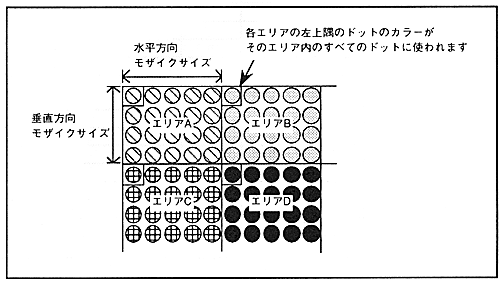

Mosaic processing can be performed for each screen on the scroll plane, and the mosaic size at that time can be set for each of the horizontal and vertical directions.
Mosaic processing is a function that divides each scroll screen into several areas of a specified size and displays the color of the upper left dot of each area on all the dots in that area. A mosaic pattern can be obtained by arranging different color areas. The size of the mosaic area can be specified independently in the horizontal and vertical directions. The horizontal size can be specified from 1 to 16 dots in 1-dot units. The vertical size can be specified from 1 to 16 dots in 1-dot units in non-interlace mode, and from 2 to 32 dots in 2-dot units in interlace mode. If the register is set to perform mosaic processing in double-dense interlace mode, the screen is forcibly displayed in single-dense interlace mode.
If you perform mosaic processing on NBG0 or NBG1, the vertical cell scroll function will be disabled. RBG0 and RBG1 mosaic processing can only be done in the horizontal direction.
The mosaic pattern is shown in Figure 4.19.
Figure 4.19 Mosaic pattern
